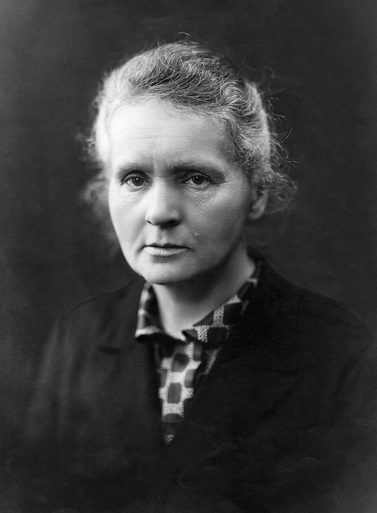
Physics & Astronomy 2 NobelsMarie Curie
Pioneer of research on radioactivity who discovered polonium and radium. The first woman to win a Nobel Prize, and still the only person to win in two different sciences.
Read moreResearchers, explorers and inventors whose work changed how we understand the universe, life and ourselves — many of them against the odds.

Physics & Astronomy 2 NobelsPioneer of research on radioactivity who discovered polonium and radium. The first woman to win a Nobel Prize, and still the only person to win in two different sciences.
Read more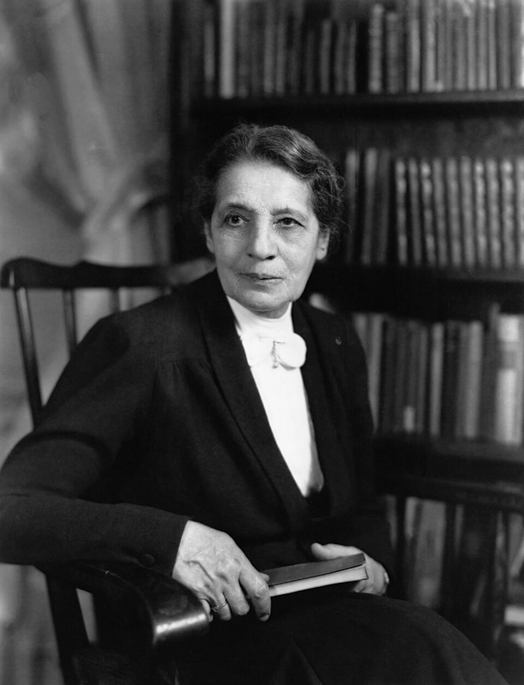
Physics & AstronomyWith Otto Frisch she gave the first theoretical explanation of nuclear fission in 1939. The Nobel committee passed her over, but element 109, meitnerium, bears her name.
Read more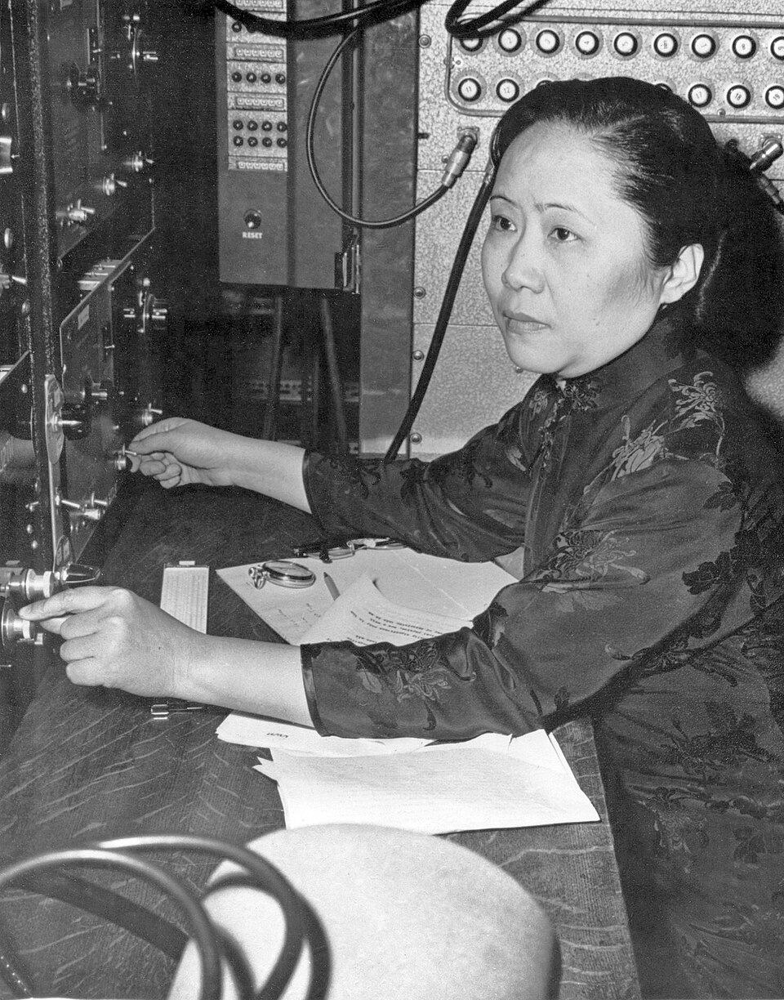
Physics & AstronomyExperimental physicist whose 1956 experiment showed that parity is not conserved in weak interactions, overturning a long-held assumption. She also worked on the Manhattan Project.
Read more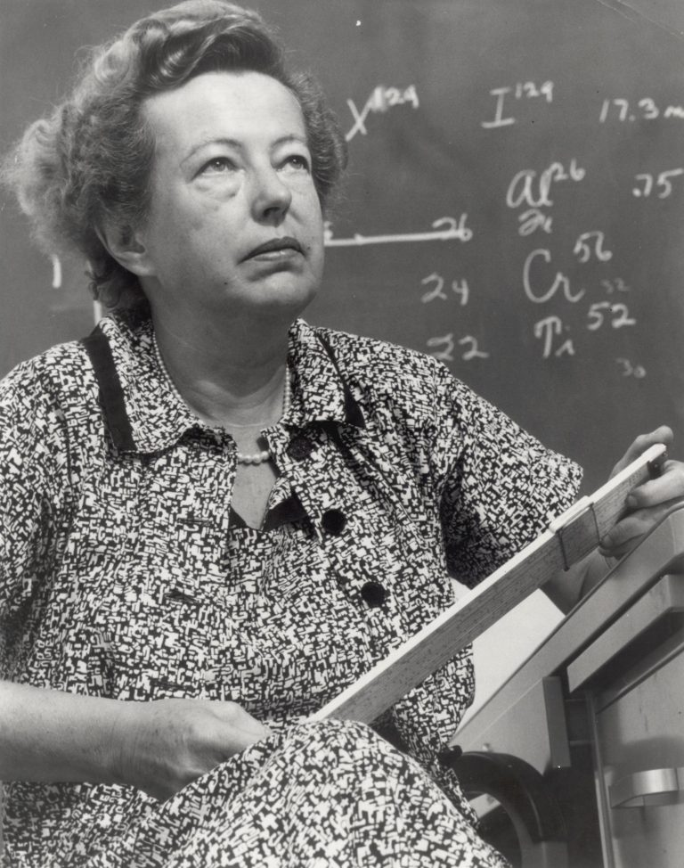
Physics & Astronomy Physics 1963Developed the nuclear shell model, which explains why certain numbers of protons and neutrons make a nucleus especially stable. The second woman to win the Physics Nobel.
Read moreCo-invented chirped pulse amplification, the technique behind today's intense ultrashort lasers used in eye surgery and research. The third woman to win the Physics Nobel.
Read more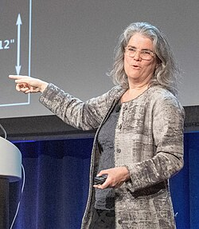
Physics & Astronomy Physics 2020Astronomer who tracked stars orbiting the centre of the Milky Way and showed that they circle a supermassive black hole. Shared the 2020 Nobel Prize in Physics.
Read more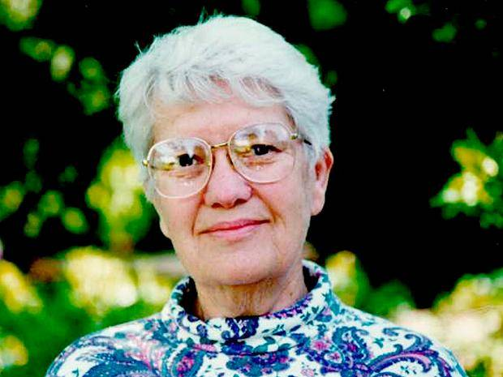
Physics & AstronomyHer measurements of galaxy rotation curves gave some of the strongest evidence for dark matter. The Vera C. Rubin Observatory in Chile is named in her honour.
Read more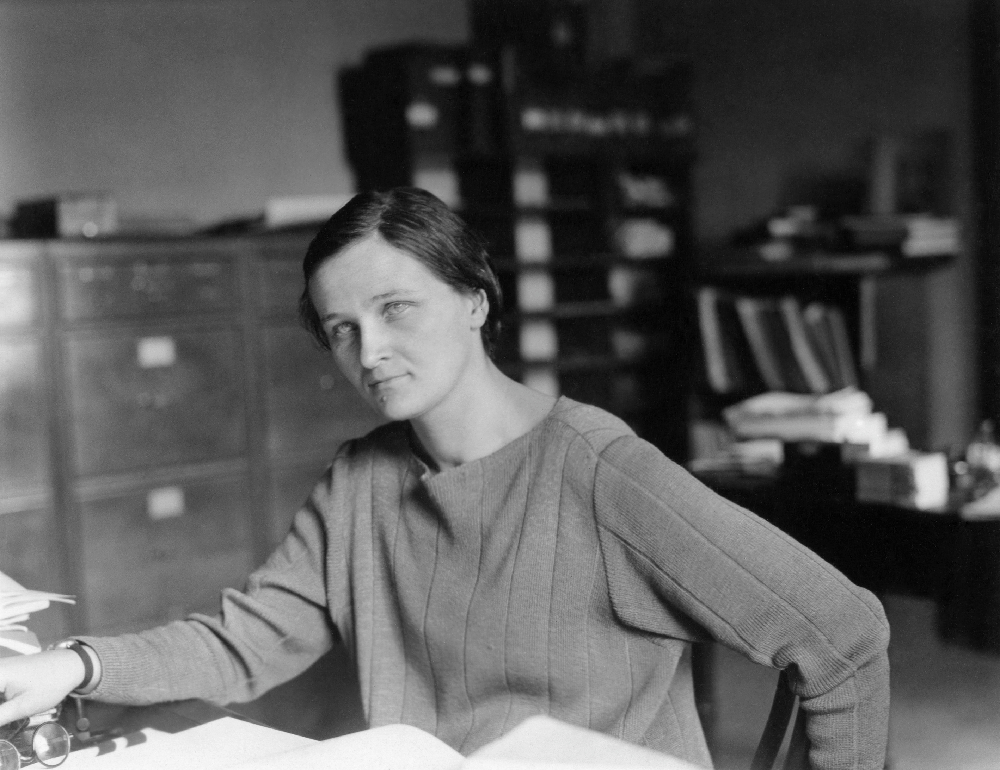
Physics & AstronomyShowed in her 1925 doctoral thesis that stars are made mainly of hydrogen and helium. The result was doubted at first, then became a cornerstone of astrophysics.
Read more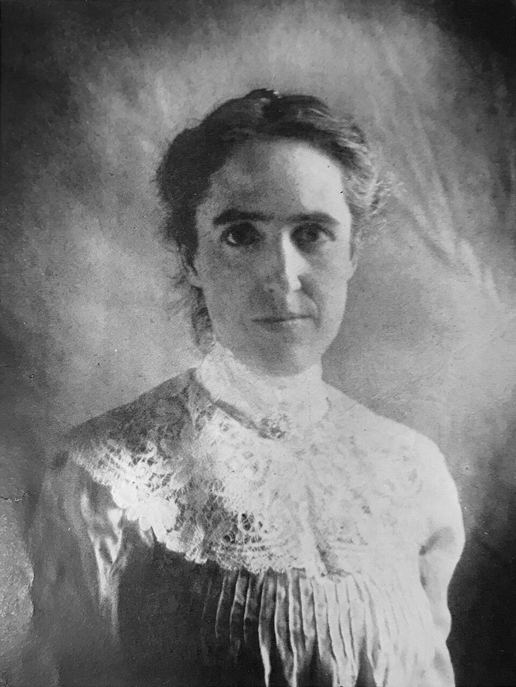
Physics & AstronomyA Harvard 'computer' who discovered the period–luminosity relation of Cepheid variable stars, giving astronomers a way to measure distances across the universe.
Read more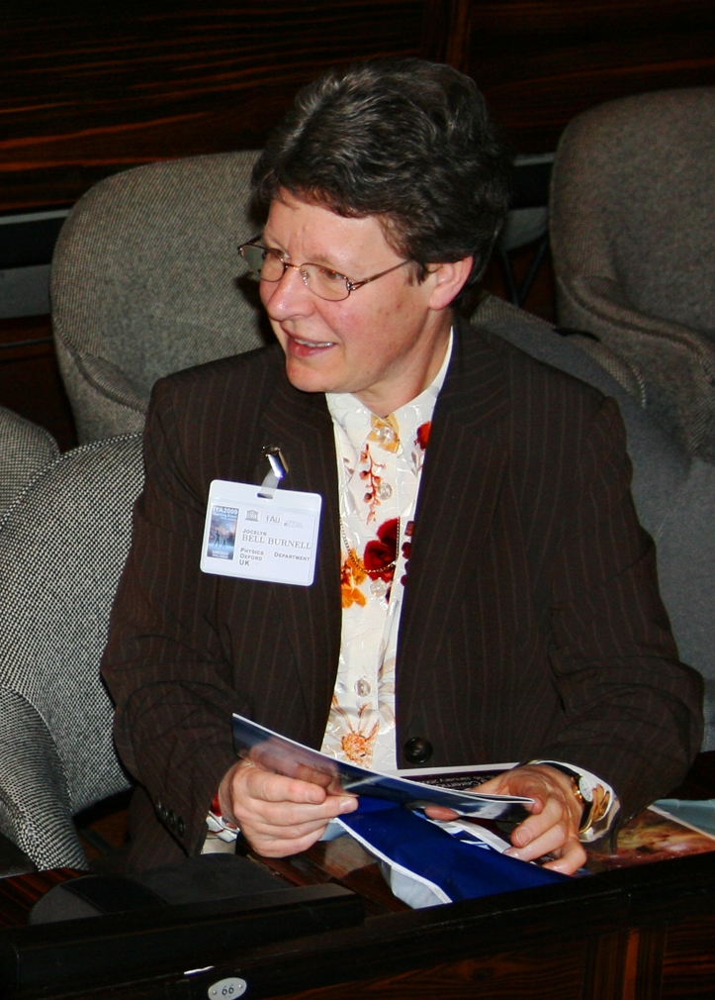
Physics & AstronomyAs a PhD student she discovered the first radio pulsars in 1967. She gave her 2018 Breakthrough Prize money to support under-represented students in physics.
Read more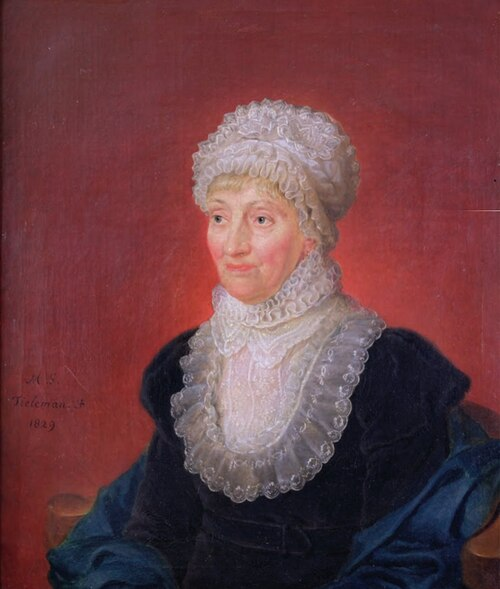
Physics & AstronomyBorn in Hanover, she discovered eight comets and several nebulae. In 1835 she was among the first women made honorary members of the Royal Astronomical Society.
Read more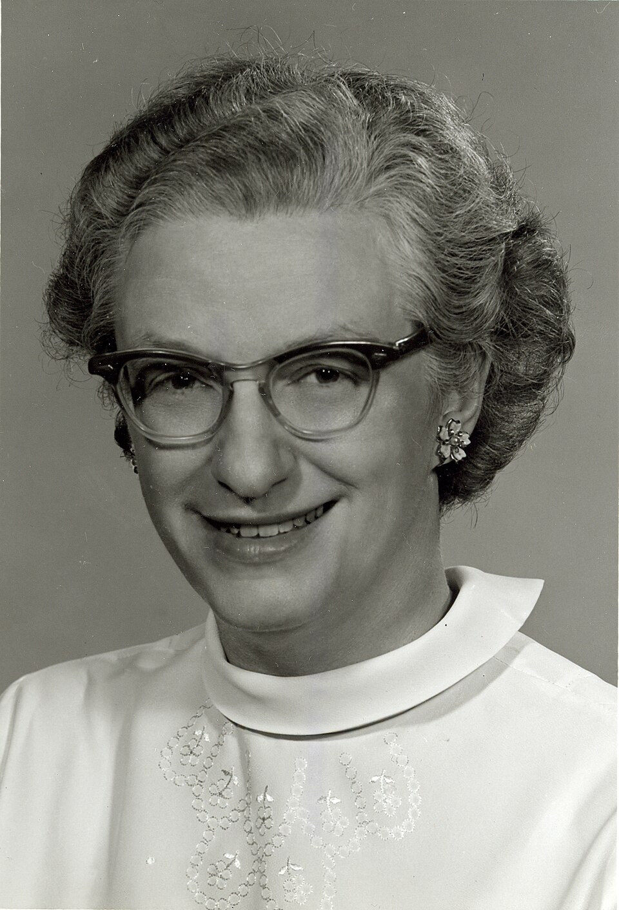
Physics & AstronomyNASA's first Chief of Astronomy and a driving force behind the Hubble Space Telescope, often called its 'mother'. NASA's Roman Space Telescope carries her name.
Read more Space & Engineering
Space & Engineering
NASA mathematician whose trajectory calculations helped make John Glenn's 1962 orbital flight possible. She received the Presidential Medal of Freedom in 2015.
Read more Space & Engineering
Space & Engineering
Led the MIT team that wrote the on-board flight software for the Apollo missions, and helped establish software engineering as a discipline.
Read more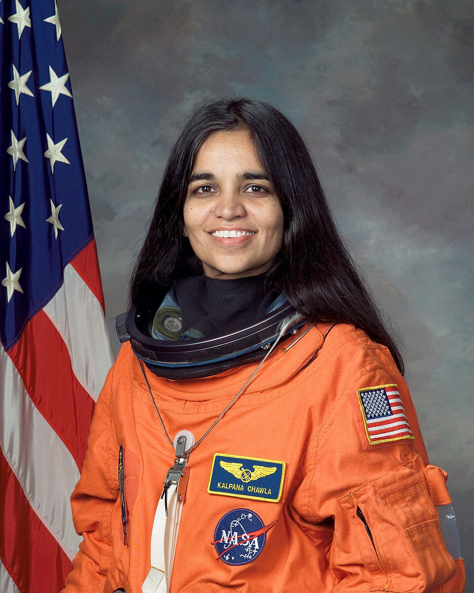
Space & EngineeringBorn in Karnal, India, she became the first woman of Indian origin in space in 1997. She died with her crew in the Columbia disaster in 2003.
Read more Space & Engineering
Space & Engineering
Physician and engineer who became the first Black woman in space, flying aboard Space Shuttle Endeavour in 1992.
Read more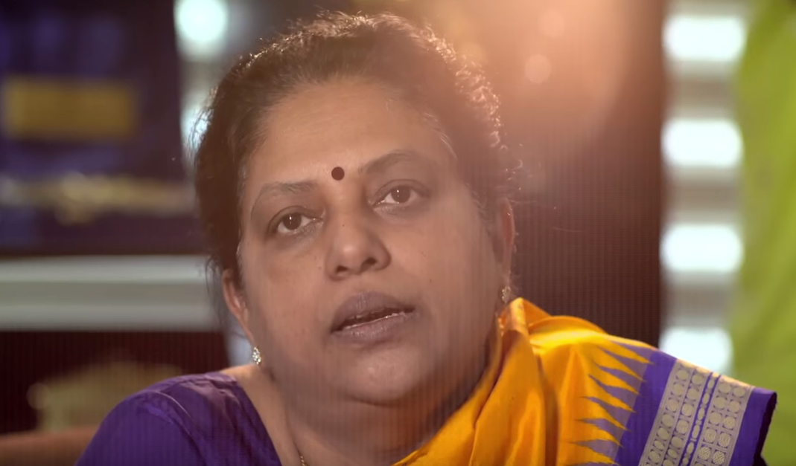
Space & EngineeringMissile scientist at DRDO who served as project director for the Agni-IV long-range missile, which earned her the nickname 'Missile Woman of India'.
Read more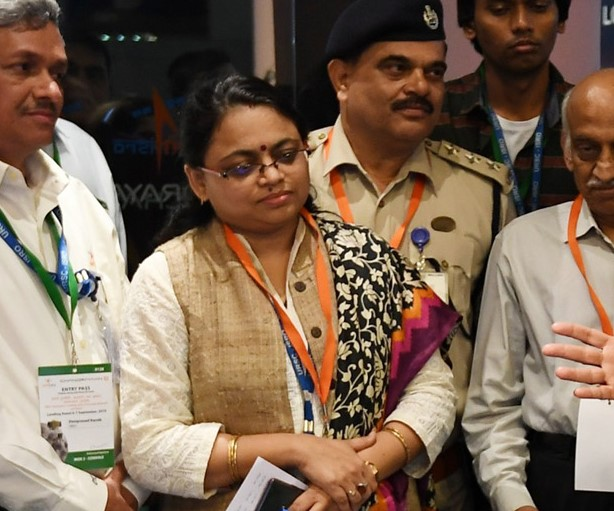
Space & EngineeringAerospace engineer at ISRO who was Mission Director of Chandrayaan-2 and deputy operations director of the Mars Orbiter Mission.
Read more Chemistry Chemistry 1964
Chemistry Chemistry 1964
Used X-ray crystallography to determine the structures of penicillin, vitamin B12 and later insulin. Won the 1964 Nobel Prize in Chemistry.
Read more Chemistry
Chemistry
Her X-ray diffraction images, including the famous Photo 51, were crucial to working out the double helix of DNA. She also did pioneering work on coal and viruses.
Read more Chemistry Chemistry 2009
Chemistry Chemistry 2009
Crystallographer who mapped the structure of the ribosome, the cell's protein factory, and showed how antibiotics block it. Nobel Prize in Chemistry 2009.
Read more Chemistry Chemistry 2018
Chemistry Chemistry 2018
Pioneered directed evolution, using mutation and selection in the lab to create new enzymes. Nobel Prize in Chemistry 2018.
Read more Chemistry Chemistry 2020
Chemistry Chemistry 2020
Microbiologist who, with Jennifer Doudna, turned the bacterial CRISPR-Cas9 system into a programmable gene-editing tool. Shared the 2020 Nobel Prize in Chemistry.
Read more Chemistry Chemistry 2020
Chemistry Chemistry 2020
Biochemist who co-developed CRISPR-Cas9 genome editing with Emmanuelle Charpentier, opening new routes to treating genetic disease. Shared the 2020 Nobel Prize in Chemistry.
Read more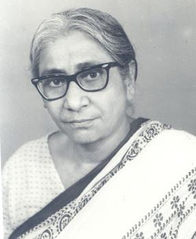
ChemistryOrganic chemist who studied plant-derived compounds such as vinca alkaloids. In 1944 she became the first Indian woman to earn a Doctor of Science from an Indian university.
Read more Life & Medicine Medicine 1983
Life & Medicine Medicine 1983
Discovered 'jumping genes' (transposons) in maize decades before the idea was accepted. Awarded the 1983 Nobel Prize in Physiology or Medicine on her own.
Read more Life & Medicine Medicine 1947
Life & Medicine Medicine 1947
Biochemist who with her husband worked out how the body stores and releases sugar (the Cori cycle). The first woman to win the Nobel Prize in Physiology or Medicine.
Read more Life & Medicine Medicine 1986
Life & Medicine Medicine 1986
Neurologist who discovered nerve growth factor, a protein that controls how nerve cells grow. Shared the 1986 Nobel Prize in Physiology or Medicine.
Read more Life & Medicine Medicine 1988
Life & Medicine Medicine 1988
Developed drugs for leukaemia, gout, malaria and transplant rejection through rational drug design. Shared the 1988 Nobel Prize in Physiology or Medicine.
Read more Life & Medicine Medicine 2015
Life & Medicine Medicine 2015
Pharmaceutical chemist who discovered artemisinin, from sweet wormwood, leading to a malaria treatment that has saved millions of lives. Nobel Prize 2015.
Read more Life & Medicine Medicine 2009
Life & Medicine Medicine 2009
Molecular biologist who co-discovered telomerase, the enzyme that protects the ends of chromosomes. Shared the 2009 Nobel Prize in Physiology or Medicine.
Read more Life & Medicine Medicine 2008
Life & Medicine Medicine 2008
Virologist who co-discovered HIV as the cause of AIDS in 1983. Shared the 2008 Nobel Prize in Physiology or Medicine.
Read more Life & Medicine Medicine 2014
Life & Medicine Medicine 2014
Neuroscientist who co-discovered grid cells, the brain's internal positioning system. Shared the 2014 Nobel Prize in Physiology or Medicine.
Read more Life & Medicine Medicine 1995
Life & Medicine Medicine 1995
Developmental biologist who identified key genes that set up the body plan of fruit-fly embryos. Shared the 1995 Nobel Prize in Physiology or Medicine.
Read more Life & Medicine Medicine 2023
Life & Medicine Medicine 2023
Biochemist whose work on modified nucleosides made mRNA therapeutics practical, paving the way for mRNA COVID-19 vaccines. Shared the 2023 Nobel Prize.
Read more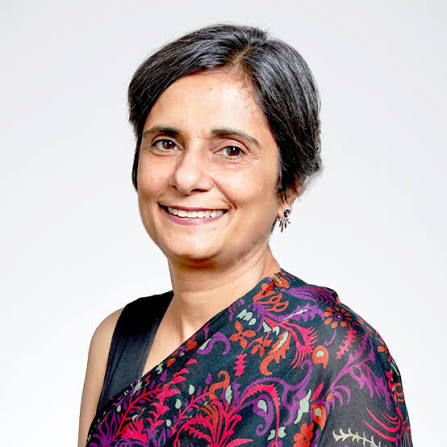
Life & MedicineClinical scientist who studies rotavirus and other gut infections to guide vaccines for children. In 2019 she became the first Indian woman elected a Fellow of the Royal Society.
Read more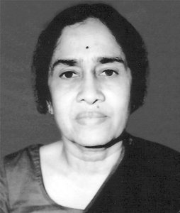
Life & MedicineIn 1939 she became the first Indian woman to earn a PhD in a scientific discipline, from Cambridge, where she showed that cytochrome C is present in all plant cells.
Read more Life & Medicine
Life & Medicine
Anaesthesiologist who devised the Apgar score in 1952, a quick check of a newborn's health that is still used in hospitals worldwide.
Read more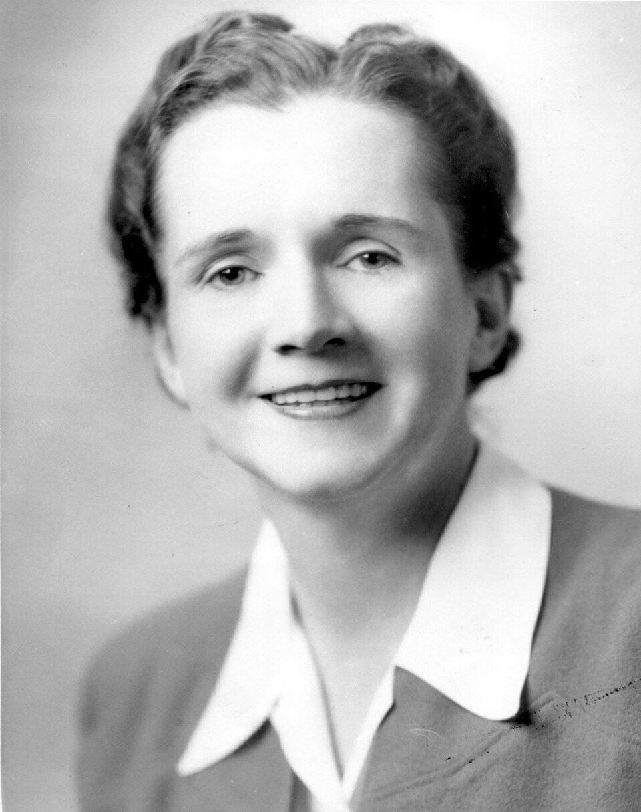
Nature & EarthMarine biologist and writer whose 1962 book Silent Spring exposed the dangers of pesticides and helped launch the modern environmental movement.
Read more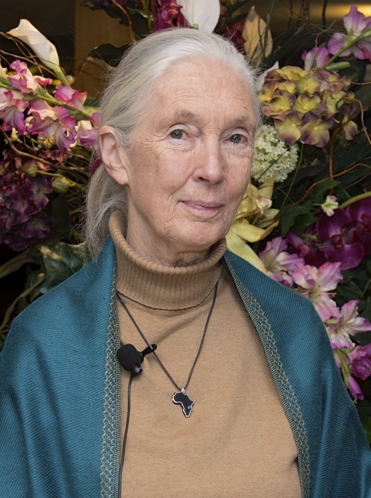
Nature & EarthPrimatologist whose long-term study of chimpanzees at Gombe, Tanzania, revealed that they make and use tools.
Read more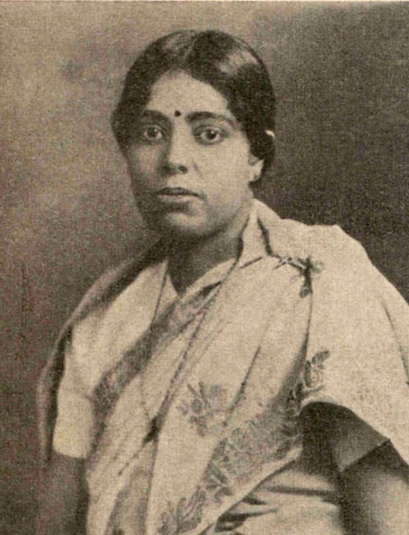
Nature & EarthBotanist and cytogeneticist from Kerala who studied plant chromosomes and sugarcane breeding. In 1951 she was invited to reorganise the Botanical Survey of India.
Read more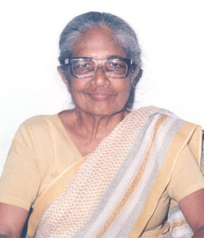
Nature & EarthPhysicist and meteorologist who helped India build its own weather instruments and measured solar radiation, wind energy and ozone. She retired as Deputy Director-General of the India Meteorological Department.
Read more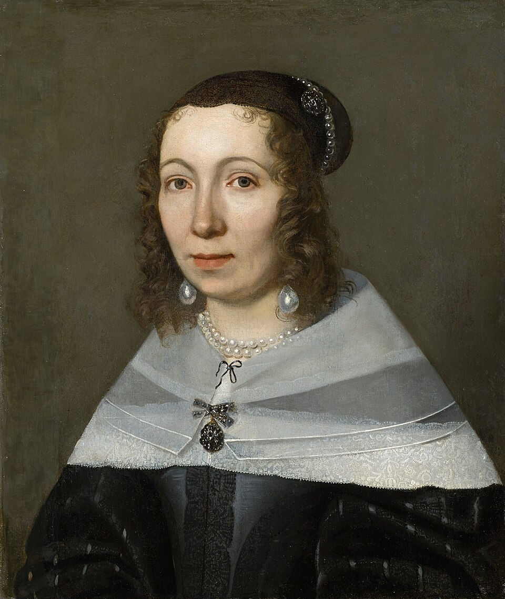
Nature & EarthNaturalist and artist who documented insect metamorphosis in careful detail, including on a 1699 expedition to Suriname.
Read more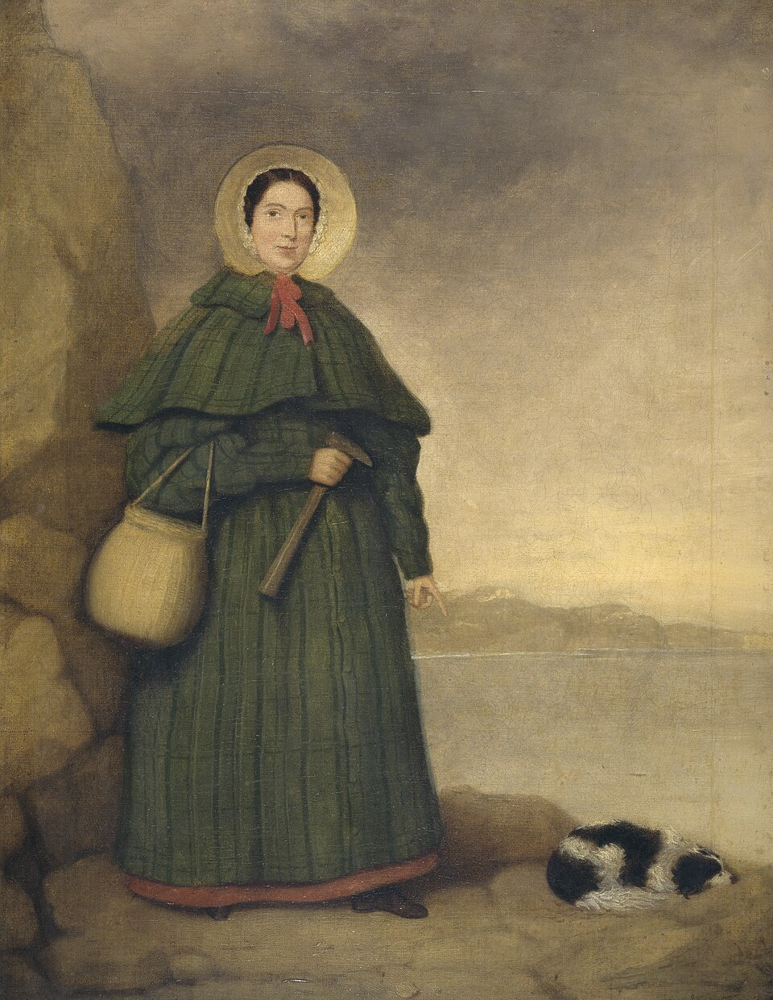
Nature & EarthFossil collector from Lyme Regis whose finds of ichthyosaur and plesiosaur skeletons helped reshape ideas about prehistoric life and extinction.
Read more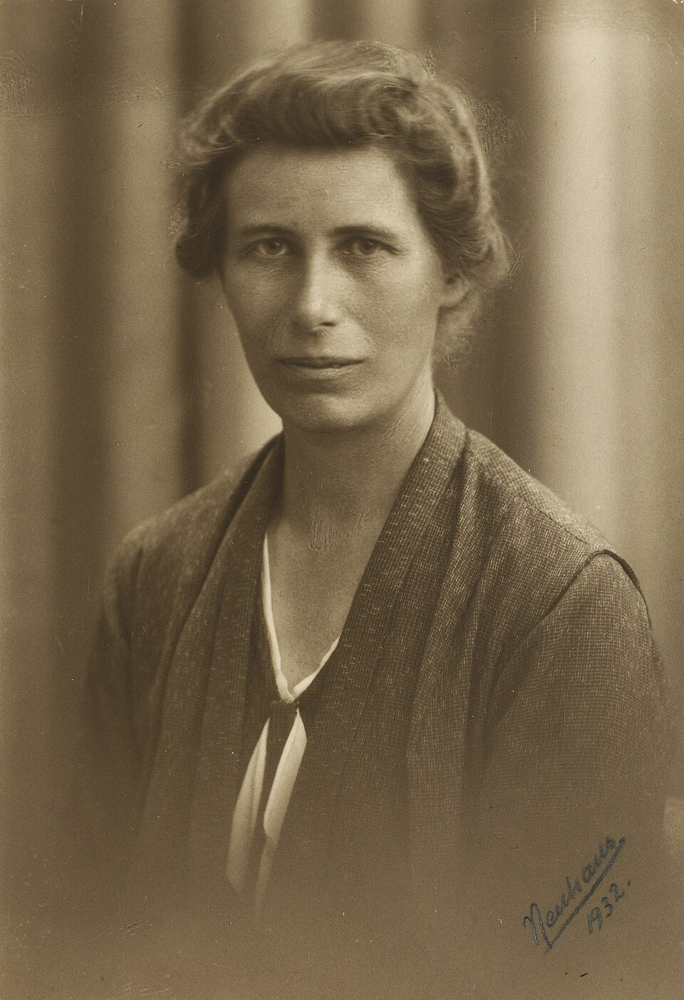
Nature & EarthSeismologist who deduced in 1936 that Earth has a solid inner core inside its liquid outer core, by studying how earthquake waves travel through the planet.
Read more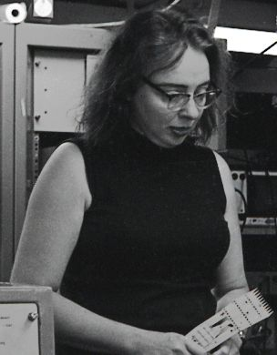
Nature & EarthOceanographic cartographer who, with Bruce Heezen, mapped the ocean floor and revealed the rift valley of the Mid-Atlantic Ridge, supporting continental drift.
Read more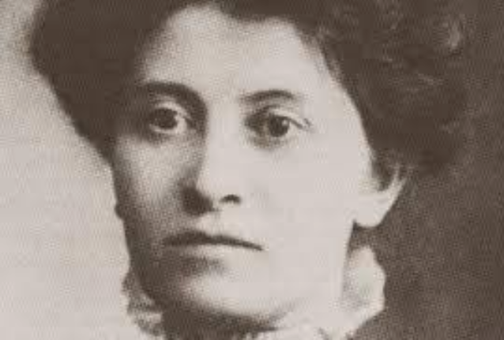
Nature & EarthHer 1856 experiments showed that air containing carbon dioxide traps more heat than ordinary air, an early observation of what is now called the greenhouse effect.
Read more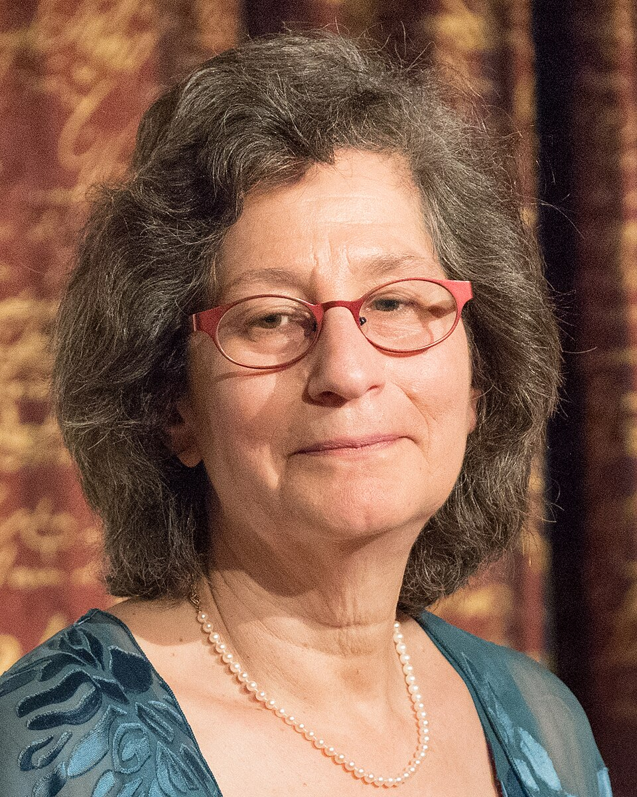
Nature & EarthAtmospheric chemist who explained the role of polar stratospheric clouds in the Antarctic ozone hole, and later co-chaired the IPCC Working Group I for its 2007 report.
Read more Maths & Computing
Maths & Computing
Mathematician, astronomer and philosopher who taught in Alexandria and wrote commentaries on earlier mathematical works. Few of her own writings survive.
Read more Maths & Computing
Maths & Computing
Self-taught mathematician who advanced work on Fermat's Last Theorem and the theory of elasticity, at first writing under a male pseudonym.
Read more Maths & Computing
Maths & Computing
Wrote the first published algorithm intended for a machine, in her notes on Babbage's Analytical Engine, and foresaw computers handling more than numbers.
Read more Maths & Computing
Maths & Computing
Algebraist whose theorem links symmetries to conservation laws in physics. Einstein praised her creative genius; she was forced to leave Germany in 1933.
Read more Maths & Computing
Maths & Computing
Computer scientist and US Navy rear admiral who developed one of the first compilers and helped shape the COBOL programming language.
Read more Maths & Computing
Maths & Computing
Mathematician who studied the geometry of curved surfaces and in 2014 became the first woman to win the Fields Medal.
Read more Maths & Computing
Maths & Computing
Her work on geometric analysis and gauge theory shaped modern geometry. In 2019 she became the first woman to win the Abel Prize.
Read moreNo scientists match your search. Try a different name, country or field.
Short profiles are summarised from public sources — follow the “Read more” links for full biographies. This list is a small, personal selection; countless other women deserve a place on it.